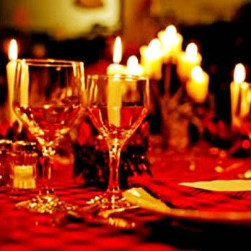
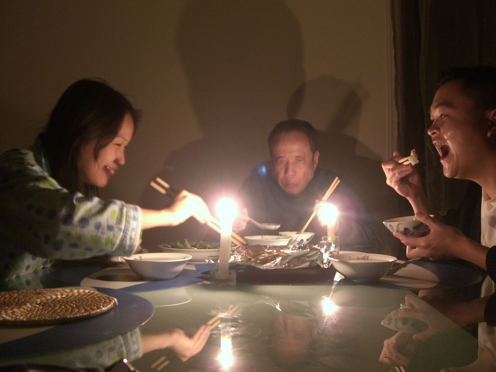
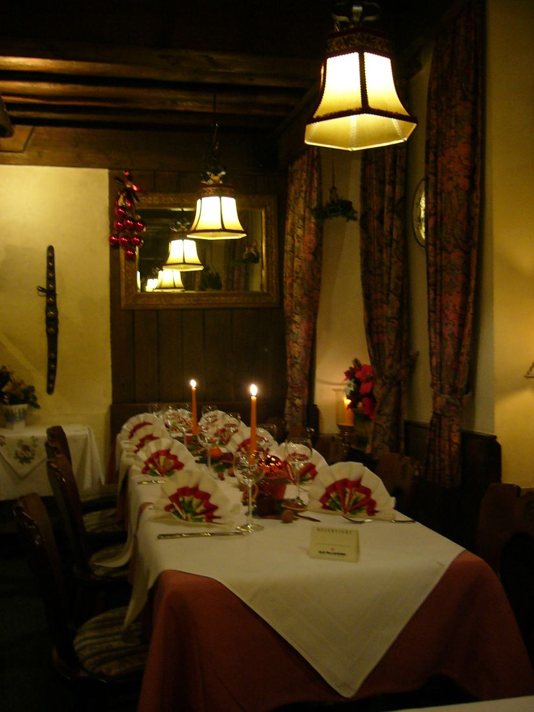
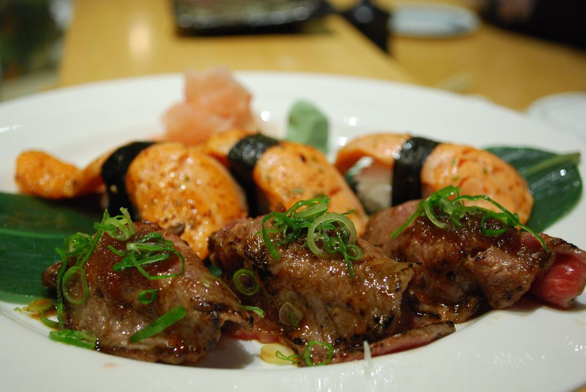
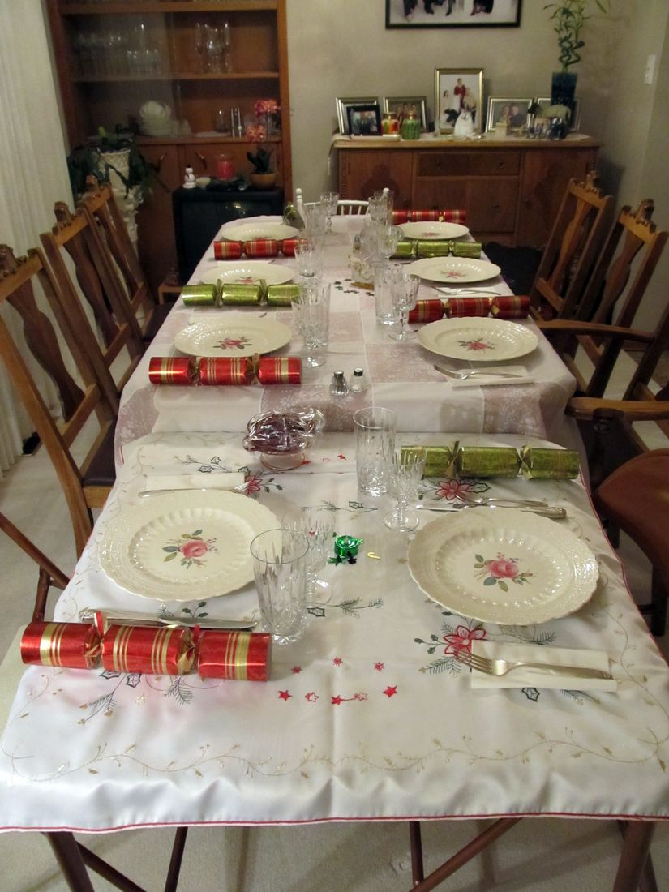

Where The Flicker Of The Flame Awakens Appetite
CandleAppetite orchestrates multi-course evening dinner rituals illuminated exclusively by virgin beeswax candlelight. Blending classical French culinary foundations with avant-garde flavor extraction, heirloom seasonal terroir, and Grand Cru cellar pairings.

The Four Tenets Of Candlelight Dining
Dining is not merely the consumption of calories; it is a multisensory symphony where ambient lumens, acoustic resonance, and culinary chemistry converge.

Luminescent Psychology1,800 Kelvin Warm Spectrum
Candlelight eliminates high-frequency blue light, triggering parasympathetic nervous system relaxation. Pupillary dilation softens depth perception, focusing conscious attention entirely onto aromatic nuances and companionship.

Gastronomic PrecisionMicro-Seasonal Terroir
We forge direct alliances with biodynamic farms, coastal day-boat divers, and subterranean truffle foragers. Ingredients harvested within thirty kilometers arrive in our kitchen within six hours of harvesting.
 Oenological Mastery
Oenological Mastery
Dynamic Decanting Kinetics
Vintage Grand Cru wines are aerated using geometric crystal carafes, orchestrating controlled oxygen dissolution to soften polymeric tannins while preserving delicate volatile anthocyanin bouquets.
The 7-Course Candlelight Tasting Menu
An unbroken narrative of sensory crescendo, moving from bracing ocean salinity to deep volcanic earthiness and molten cocoa warmth.


Thermodynamic Decanting & Tannic Physics
Great wine is alive. Trapped inside a sealed glass bottle for twenty years, complex phenolic compounds and condensed tannins exist in an anaerobic equilibrium. Once uncorked, introducing controlled atmospheric oxygen transforms the liquid through selective oxidation.
Our Head Sommelier calibrates aeration time using wide-bottomed crystal decanters that maximize the fluid surface-to-volume ratio. As wine spirals down the neck, boundary-layer turbulence dissolves ambient oxygen, stripping away reductive hydrogen sulfides and allowing delicate esters of dark cherry, violet, and cigar box cedar to blossom.
Aeration accelerates the co-pigmentation of monomeric catechins with anthocyanin pigment molecules, creating stable polymeric complexes that eliminate tongue-drying astringency, leaving a seamless velvety finish across the palate.

Sensory Flavor Harmonization Matrix
A scientific breakdown of how organic acids, lipids, and polyphenols interact on the human palate during dinner.
| Dinner Course | Culinary Profile | Primary Food Acid/Lipid | Selected Cellar Vintage | Sensory Interaction Mechanism |
|---|---|---|---|---|
| Hokkaido Scallop | Sweet oceanic brine, rich caviar | Oleic acid, marine triglycerides | 2015 Dom Pérignon Brut | Carbonic acid scrub lifts heavy butter richness |
| Black Truffle Tajarin | Earthy musk, aged dairy umami | Glutamic acid, butyric lipids | 2018 Barolo Monprivato | Polymeric Nebbiolo tannins bind dairy proteins |
| Spiced Duck Breast | Game fowl, dark plum reduction | Palmitic fatty acids, malic acid | 2017 Hermitage Rouge (Syrah) | Rotundone sesquiterpenes mirror spiced reduction |
| Miyazaki A5 Wagyu | Intense intramuscular marbling | Stearic & oleic saturated fats | 2016 Château Margaux (Cabernet) | Gallotannins emulsify dense wagyu marbling |
| Chocolate Fondant | 72% Venezuelan dark cocoa | Theobromine, cocoa butter lipids | 1994 Graham's Vintage Port | Residual grape sugars balance dark theobromine bitterness |

The Science Of Candlelight Illumination
Artificial electric lighting—even modern 2700K warm LEDs—emits unnatural spectral spikes that signal daytime alertness to the human suprachiasmatic nucleus. In contrast, an open candle flame radiates pure incandescent black-body thermal radiation centered at approximately 1,800 Kelvin.
This gentle amber glow suppresses cortisol secretion while stimulating melatonin synthesis, inducing an innate psychological state of intimacy, tranquility, and safety known in northern European culinary culture as hygge.
- ✓ 100% Raw Forest Beeswax: Burned without synthetic paraffin or petroleum distillates, releasing subtle negative ions and natural honeyed propolis aromas.
- ✓ Visual Soft-Focus Phenomenon: The flickering flame creates dynamic micro-shadows that enhance the perceived 3D texture of handcrafted pottery and glistening reductions.
- ✓ Acoustic Intimacy: Soft candlelight naturally encourages dinner guests to lower speech volume, creating an acoustically serene dining room free of harsh ambient clatter.
The Interactive Dinner Sommelier
Select your focal dinner course and personal palate preference to discover the optimal vintage pairing from our underground cellar.
Echoes From Our Evening Dinner Tables
Reflections from culinary critics, celebrating couples, and international travelers who have dined beneath our candelabras.
"The transition from modern urban bustle into CandleAppetite's beeswax-illuminated salon felt like stepping into an 18th-century European salon. The A5 Wagyu paired with aged Bordeaux was transcendent."
"Celebrated our twentieth wedding anniversary in the Private Alcove. The sommelier's pairing of vintage Barolo with the hand-cut tajarin was an unforgettable masterclass in flavor harmony."
"What struck me most was the pacing. In a world of rushed dining, CandleAppetite allows three serene hours to unfold at the pace of melting beeswax. Pure culinary poetry."
The Art & Thermodynamics Of Tableside Flambé
At the culmination of the evening, our Maître d' brings the open copper gueridon cart directly to your table. The preparation of our Grand Marnier crêpes and cognac-infused dark chocolate fondant is an exquisite study in flame thermodynamics.
When high-proof spirits reach their flash point of $78.3^\circ ext{C}$, the rising alcohol vapor ignites in a mesmerizing blue-gold bloom. This brief, intense thermal burst rapidly caramelizes exterior surface sugars without scorching underlying delicate custards, imparting deep toasted hazelnut and orange zest notes that cannot be replicated in a standard oven.

Regenerative Terroir & Zero-Waste Stewardship
True luxury honors the soil, the sea, and the community that nurtures every ingredient brought to our kitchen.
Regenerative Farm Alliances
Our heirloom tubers, micro-greens, and stone-ground flours are sourced exclusively from regenerative family farms practicing holistic crop rotation without synthetic pesticides.
Sustainable Coastal Seafood
We reject industrial bottom-trawling. All seafood is hand-dived or harvested via single-hook day boats operating under strict seasonal quotas that protect marine biodiversity.
Closed-Loop Kitchen Composting
All organic kitchen trim is composted on-site and returned to our estate herb garden, while spent beeswax tapers are re-melted and hand-poured into fresh table candles.
Frequently Addressed Dining Inquiries
Everything you need to know regarding seatings, dietary accommodations, cellar corkage, and dress code.
We host two intimate evening dinner seatings: 17:30 and 20:30. The 7-course tasting menu is designed to unfold leisurely over approximately 2.5 to 3 hours. We never double-book tables within a seating window, allowing you to linger over coffee and digestifs without feeling rushed.
Yes. Our culinary team crafts dedicated plant-based and gluten-free interpretations of our tasting menu. We request that all dietary preferences and severe allergies be communicated at least 48 hours in advance so our chefs can curate tailored reductions and emulsions.
We observe an elegant smart-casual to formal evening dress code. Jackets are encouraged for gentlemen, while tailored evening wear is standard. We respectfully request that guests refrain from athletic apparel, shorts, or beach footwear.
Yes. Guests may bring up to two 750ml bottles of collectible vintage wine not currently featured on our cellar list. A corkage fee of $75 per bottle applies, which covers professional sommelier inspection, temperature stabilization, and tableside crystal decanting.